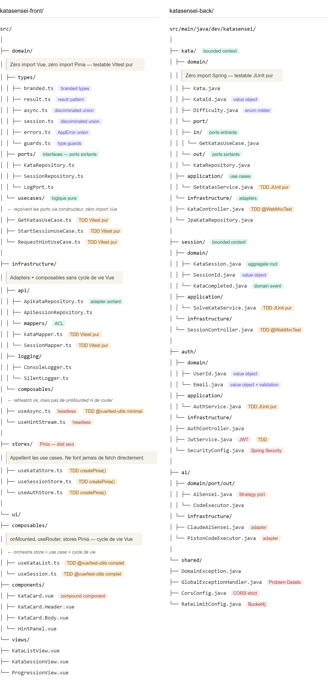

Phase 4-7
Arborescence et testabilité
Structure cible à la fin de la phase 7. Elle évolue progressivement — ne pas tout créer dès le départ.

≡
Règle de testabilité par couche
| Couche | Dépendances | Comment tester |
|---|---|---|
domain/usecases/ | Zéro import Vue, zéro Pinia | Vitest pur — le plus rapide |
domain/types/ · mappers/ | Fonctions pures | Vitest pur |
infrastructure/composables/ | ref, watch — pas de cycle de vie | Vitest + @vue/test-utils minimal |
stores/ | Pinia — appelle les use cases | Vitest + createPinia() |
ui/composables/ | onMounted, useRouter, stores | Vitest + @vue/test-utils complet |
ui/components/ | Composants Vue | @vue/test-utils · Playwright |
ℹ️ Règle générale Pousser la logique le plus bas possible dans la hiérarchie. Tout ce qui peut rester dans le domaine y reste. Ce qui a besoin du cycle de vie Vue monte dans
ui/composables/ uniquement.Structure des tests
Les tests sont dans un dossier tests/ à côté de src/, reproduisant la même arborescence. Exemple : tests/domain/usecases/GetKatasUseCase.test.ts teste src/domain/usecases/GetKatasUseCase.ts.
katasensei-front/
src/
│
├── domain/ ← Zéro import Vue, zéro Pinia
│ ├── types/
│ │ ├── branded.ts [Branded types] KataId, UserId, SessionId
│ │ ├── result.ts [Result pattern] Ok / Err
│ │ ├── async.ts [Discriminated union] AsyncState<T>
│ │ ├── session.ts [Discriminated union] SessionState
│ │ ├── errors.ts [AppError union] NetworkError | NotFoundError...
│ │ └── guards.ts [Type guards] isNetworkError, isAppError...
│ │
│ ├── ports/ ← Interfaces (ports sortants) [Archi hexagonale]
│ │ ├── KataRepository.ts
│ │ ├── SessionRepository.ts
│ │ └── LogPort.ts
│ │
│ └── usecases/ ← Logique pure [Archi hexagonale] [TDD Vitest pur]
│ ├── GetKatasUseCase.ts Reçoit KataRepository via constructeur
│ ├── StartSessionUseCase.ts
│ └── RequestHintUseCase.ts
│
├── infrastructure/ ← Adapters [Archi hexagonale]
│ ├── api/
│ │ ├── ApiKataRepository.ts Implémente KataRepository [Adapter sortant]
│ │ ├── ApiSessionRepository.ts
│ │ └── mappers/ ← Anti-Corruption Layer [ACL]
│ │ ├── KataMapper.ts ApiKataDto → Kata [TDD Vitest pur]
│ │ └── SessionMapper.ts
│ │
│ ├── logging/
│ │ ├── ConsoleLogger.ts Implémente LogPort
│ │ └── SilentLogger.ts Pour les tests — jamais de mock console
│ │
│ └── composables/ ← ref/watch ok — pas de onMounted ni router
│ ├── useAsync.ts [Headless composable] [TDD @vue/test-utils minimal]
│ └── useHintStream.ts [Headless composable] SSE streaming
│
├── stores/ ← Pinia — état seul [Store pattern]
│ │ Appellent les use cases. Jamais fetch directement.
│ ├── useKataStore.ts [TDD createPinia()]
│ ├── useSessionStore.ts
│ └── useAuthStore.ts
│
└── ui/ ← Composants Vue uniquement
├── composables/ ← onMounted, useRouter, stores Pinia
│ ├── useKataList.ts [TDD @vue/test-utils complet]
│ └── useSession.ts
│
├── components/
│ ├── ui/ [shadcn-vue — composants copiés dans le projet]
│ │ ├── button.vue
│ │ ├── card.vue
│ │ └── badge.vue
│ ├── KataCard.vue [Compound Component] [style scoped + BEM]
│ └── HintPanel.vue [style scoped + BEM]
│
└── views/
├── KataListView.vue [style scoped + BEM]
├── KataSessionView.vue
└── ProgressionView.vue
tests/ [même arborescence que src/]
├── domain/
│ ├── types/
│ └── usecases/
│ ├── GetKatasUseCase.test.ts
│ └── StartSessionUseCase.test.ts
├── infrastructure/
│ └── api/
│ └── mappers/
│ ├── KataMapper.test.ts
│ └── SessionMapper.test.ts
├── stores/
│ └── useKataStore.test.ts
└── ui/
├── components/
│ ├── KataCard.test.ts
│ └── HintPanel.test.ts
├── composables/
│ └── useKataList.test.ts
└── views/
└── KataListView.test.tsStructure des tests back
Les tests Spring Boot suivent la convention Maven standard — un dossier src/test/java/ reproduit l'arborescence de src/main/java/.
src/
main/java/dev/katasensei/
kata/domain/...
kata/application/...
kata/infrastructure/...
test/java/dev/katasensei/
kata/domain/
KataTest.java [JUnit pur — Value Objects]
kata/application/
GetKatasServiceTest.java [JUnit pur — FakeRepository]
kata/infrastructure/
KataControllerTest.java [@WebMvcTest]
JpaKataRepositoryTest.java [@DataJpaTest + Testcontainers]
auth/application/
AuthServiceTest.java [JUnit pur]
auth/infrastructure/
AuthControllerTest.java [@WebMvcTest]
JwtServiceTest.java [JUnit pur]
test/resources/
application-test.yml [Config de test — DB Testcontainers]ℹ️ Convention Maven
src/test/ est le dossier de test standard. Maven et Spring Boot le trouvent automatiquement — pas de configuration supplémentaire.katasensei-back/
src/main/java/dev/katasensei/
│
├── kata/ ← Bounded context [DDD tactique]
│ ├── domain/ ← Zéro import Spring [Archi hexagonale]
│ │ ├── Kata.java
│ │ ├── KataId.java [Value Object]
│ │ ├── Difficulty.java [Enum métier] avec applyTo(score)
│ │ └── port/
│ │ ├── in/ ← Ports entrants [Archi hexagonale]
│ │ │ └── GetKatasUseCase.java
│ │ └── out/ ← Ports sortants
│ │ └── KataRepository.java
│ │
│ ├── application/ ← Use cases [TDD JUnit pur]
│ │ └── GetKatasService.java Implémente GetKatasUseCase
│ │
│ └── infrastructure/ ← Adapters [Archi hexagonale]
│ ├── KataController.java [TDD @WebMvcTest]
│ └── JpaKataRepository.java Implémente KataRepository
│
├── session/ ← Bounded context
│ ├── domain/
│ │ ├── KataSession.java [Aggregate Root] [DDD]
│ │ ├── SessionId.java [Value Object]
│ │ └── KataCompleted.java [Domain Event]
│ ├── application/
│ │ └── SolveKataService.java [TDD JUnit pur]
│ └── infrastructure/
│ └── SessionController.java [TDD @WebMvcTest]
│
├── auth/
│ ├── domain/
│ │ ├── UserId.java [Value Object]
│ │ └── Email.java [Value Object + validation compact constructor]
│ ├── application/
│ │ └── AuthService.java [TDD JUnit pur]
│ └── infrastructure/
│ ├── AuthController.java
│ ├── JwtService.java [Sécurité] [TDD]
│ └── SecurityConfig.java [Spring Security] [Sécurité]
│
├── ai/
│ ├── domain/port/out/
│ │ ├── AiSensei.java [Strategy port] [Design pattern]
│ │ └── CodeExecutor.java
│ └── infrastructure/
│ ├── ApiIaSensei.java [Adapter sortant]
│ └── PistonCodeExecutor.java [Adapter sortant]
│
└── shared/
├── DomainException.java
├── GlobalExceptionHandler.java [Problem Details RFC 7807] [Sécurité]
├── CorsConfig.java [CORS strict] [Sécurité]
└── RateLimitConfig.java [Bucket4j] [Sécurité]△
Stratégie de tests complète
Côté front
| Ce qu'on teste | Outil | Vitesse |
|---|---|---|
| Use cases | Vitest pur | < 10ms |
| Mappers | Vitest pur | < 10ms |
| Type guards | Vitest pur | < 10ms |
Composables headless (useAsync) | Vitest + @vue/test-utils minimal | < 50ms |
| Stores Pinia | Vitest + createPinia() | < 50ms |
Composables UI (useKataList) | Vitest + @vue/test-utils complet | < 100ms |
| Composants Vue | @vue/test-utils | < 200ms |
| Parcours utilisateur | Playwright e2e | quelques secondes |
Côté back
| Ce qu'on teste | Outil | Vitesse |
|---|---|---|
| Domain (use cases, value objects) | JUnit 5 pur — FakeRepository | < 10ms |
| Contrôleurs | @WebMvcTest — use case mocké | < 200ms |
| Intégration (repository + DB) | @SpringBootTest · Testcontainers | quelques secondes |
| Parcours complets | Playwright e2e | quelques secondes |
ℹ️ Pyramide de tests Beaucoup de tests unitaires rapides, quelques tests d'intégration, peu de tests e2e. Les e2e valident les chemins critiques — pas tout le comportement.